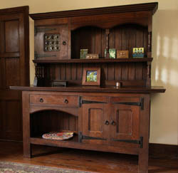

Liberty & Co Regent Street London
Today the Liberty style is recognised above all as bearing the essential characteristics of the Arts and Crafts movement and Liberty has become a generic term for furniture in this artistic and decorative mode. Whilst such generalisations have helped to secure a style of furnishing and design within our culture, much exploitation of the term Liberty has been possible in the buying and selling of furniture from the period. Characteristics of design such as heart piercing, dark oak stain, mottoes, leaded glass depicting ‘Glasgow’ roses, and beaten copperwork have become associated with Liberty style, with some justification. However it is increasingly common to see such elements cited as defining proof of an article being made by or sold by Liberty & Co.
Trying to establish an evidence base for the attribution of Liberty furniture is fairly easy in one respect because we have the heritage of Liberty catalogues describing and illustrating the range of furniture sold. The practice of labelling and stamping Liberty pieces, adopted from the earliest days helps also. However, verification can often be difficult as there are pieces which conform in all respects to Liberty style but are not labelled nor do they appear in the illustrated catalogues. Occasionally such pieces are illustrated in period journals such as The Studio, or the Cabinet Maker and their Liberty origin is confirmed. In addition, there are pieces which have no period illustration, lable or mark to verify their origin but they conform so closely to characterstics known to be exclusively linked to the Liberty design, construction or commissioning process that we might accept them as Liberty. Of the rest which appear in the ‘Liberty style’ we cannot say confidently that they are not, as new evidence appears over time, but they cannot be “attributed” as a matter of opinion without evidence which can be independently verified.
It is important to put the furniture of Liberty into the context of the whole Liberty enterprise. The Liberty furniture which is known constituted a relatively small amount of the daily trade and transactions of Liberty, the majority being concerned with fabrics, fashion and small decorative items. The Yuletide Gifts catalogues which annualy set out the Liberty stall for many years list and illustrate hundreds of small artistic knick knacks many of them with oriental origins or design.Furniture is illustrated but constitutes a small percentage of items, less than five percent. Furniture is dealt with in three major catalogues, the Handbooks of Sketches series from 1889 the Furniture for Small Flats and Country Houses circa 1902 and the Inexpensive Furniture catalogue circa 1907. Earlier catalogues show pieces of furniture mainly oriental in design and origin, and the archive of drawings at the Westminster archives provides additional evidence in the form of drawings and photographs. Together these sources make up the documentary evidence for attribution and all are open to scrutiny and study by members of the public.
From this evidence base we can see the evolution of Liberty style, from the Japanese, Egyptian and Moorish of the early years to the robust Gothic medieval styles of the Wyburd period, to the urbane and sophisticated ‘modern’ style reflecting the influence of Voysey and the later Arts and Crafts designers. There is too, a major preoccupation with decorated ‘artistic’ furniture which spans the period from the 1890’s to the early twentieth century, with inlaid designs, painted panels and stained glass. Whilst there is a clear evolution through the styles of the day, from the obsession with the oriental in the 1870’s and 80’s to the ‘modern country cottage’ movement, some preoccupations particularly the Moorish and Japanese styles were still in shown in catalogues after 1910. The Thebes stools, icons of Liberty design are perhaps the best examples of these long running favorites but there are others such as the inlaid Turkish or Moorish table which was advertised for many years.